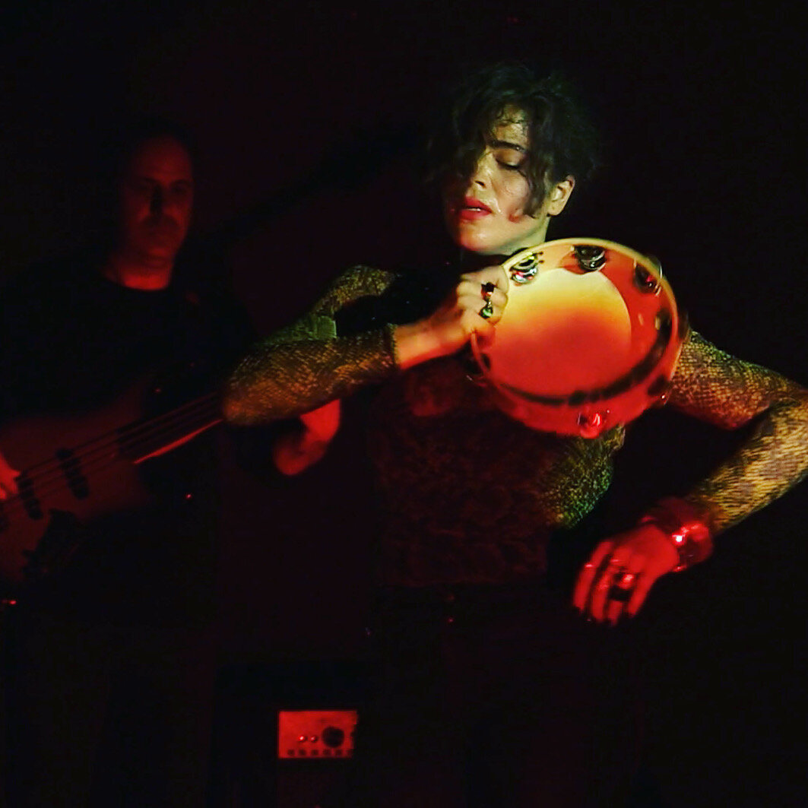

3D grahics for live performance
Digital visual lead for multi-media show by Circuit Debris incorporating live music, choreography, interactive Unity visuals and live volumetric capture via Kinect and DepthKit, ZVRK Dance Festival Bosnia, 2019
Sevdah Body is a multi-media live performance created and directed by Bosnian choreographer Mersiha Mesihovic - it incorporates elements of indigenous Balkan music and dance in a thoroughly modern interpretation. Performances took place in New York and in Bosnia at ZVRK Contemporary Dance festival, and my role was to conceptualize and produce CG visuals that would react to the dancers in real time.
I started off by using DepthKit software and Kinect sensor to record volumetric video of Mersiha’s movements, then processed this material with customized versions of Keijiro Takahashi’s Unity visualization effects, and rendered the results to video in Premiere. Next I adapted the Unity project for live performance with audio-reactive inputs and controls - in order to process the dancer’s movements into stylized 3D visualization in real time, and send it via NDI to another team member, who mixed it in VDMX VJ software with output to a projection screen. The result was a 25-min-long seamless visualisation blending between pre-rendered video and live 3D graphics and morphing along to the music and the choreography.